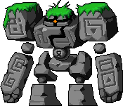
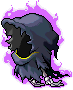
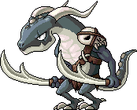

어둠의 크리스탈 원석
기타드랍 몬스터 45종
이 아이템을 주는 몬스터 45종
확인 필요·미출시 표시가 있는 몬스터는 메이플랜드에서 이 아이템을 안 줄 수도 있어요.

다크 스톤골렘Lv.58 · 회피 18골렘의 숲 팩 핑키Lv.58 · 회피 18유령선 1 슬라이미Lv.63 · 회피 20유령선 2
엘더레이스Lv.95 · 회피 38깨어나는 악
다크코니언Lv.105 · 회피 45숨겨진 용의 무덤2드랍 정보는 고전 메이플 서버 데이터(Cosmic, AGPL-3.0) 기준 참고용이고 일부는 메이플랜드 자료로 확인했어요. 드랍률은 넣지 않았어요.